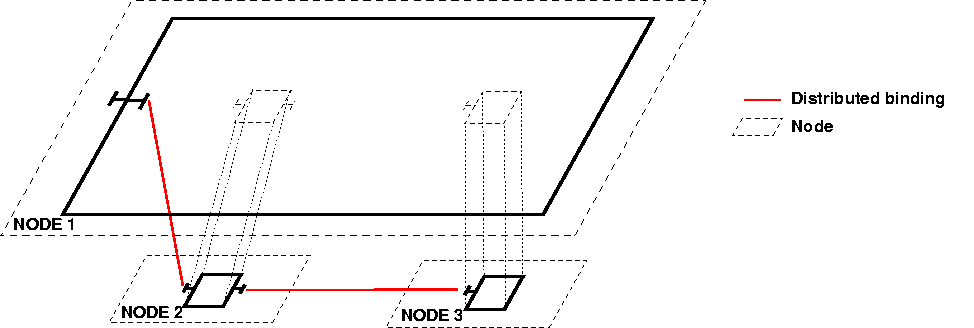

| back to API | back to index | prev | next |

|
|
Computing Grids and Peer-to-Peer networks are inherently heterogeneous and distributed, and for this reason they drive new technological challenges : complexity in the design of applications, complexity of deployment, reusability and performance issues. The objective of our work is to provide an answer to these problems through the implementation for ProActive of an extensible, dynamical and hierarchical component model, Fractal. This document is an overview of the implementation of Fractal with ProActive. First, it explains the goals and the reasons for a new implementation of the Fractal model. Second, it shows the extensions to the model and the conformance to the Fractal specification. The third section is a word on the current Architecture Description Language. The fourth section goes through some examples to illustrate the use of the API and the distribution of components. The final section is about our forthcoming research work. The architecture of the implementation is described here.
For a general overview of our work , you can also refer to a paper presented at the International Symposium on Distributed Objects and Applications (DOA), in November 2003. (.pdf)
Fractal defines a general conceptual model, along with a programming application interface (API) in Java. According to the official documentation, the Fractal component model is "a modular and extensible component model that can be used with various programming languages to design, implement, deploy and reconfigure various systems and applications, from operating systems to middleware platforms and to graphical user interfaces".
So far, to our knowledge, there is only one implementation fully compliant with the Fractal API. It is the reference implementation, called Julia.
We first tried to use Julia to manipulate active objects
(the fundamental entities in ProActive), but we wouldn't have been
able to reuse the features of the Proactive library, because of the architectures of the libraries.
Julia manipulates a base class by modifying the bytecode or adding interception objects to it. On
the other hand, ProActive is based on a meta-object protocol and provides a reference to an active object through
a typed stub. If we wanted to use active objects with Julia, the Julia runtime would try to manipulate the stub, and
not the active object itself. And if trying to force Julia to work on the same base object than ProActive, the control flow
could not traverse both ProActive and Julia.
More generally speaking, Julia is designed to work with standard objects, but not with active objects. Some features would not be
reusable using Julia with active objects, as explained in the following section.
Therefore, we had to go for our own implementation.
This implementation is different from Julia both in its objectives and in the programming technniques. As previously stated, we target Grid and P2P environments. The programming techniques and the architecture of the implementation is described in a following section.
The combination of the Fractal model with the ProActive library leverages the capabilities of both of them.
Distribution is achieved in a transparent manner over the Java RMI protocol thanks to the use of a stub/proxy pattern. Components are manipulated indifferently of their location (local or on a remote JVM).
ProActive provides a deployment framework for creating a distributed component system. Using a configuration file and the concept of virtual nodes, this framework :
A fundamental concept of the ProActive library is this of active objects, where activities can actually be redefined so as to customize their behavior.
Asynchronous method calls with transparent futures is a core feature of ProActive, and it allows concurrent processing. Indeed, suppose a caller invokes a method on a callee. This method returns a result on a component. With synchronous method calls, the flow of execution of the caller is blocked until the result of the method called is received. In the case of intensive computations, this can be relatively long. With asynchronous method calls, the caller gets a future object and will continue its tasks until it really uses the result of the method call. The process is then blocked (it is called wait-by-necessity) until the result has effectively been calculated.
The conceptual model of Fractal is the base of our work, and as it is extensible, we have added a few concepts to fulfill our needs. The Fractal specification defines conformance levels for implementations of the API (section 7.1. of the Fractal 2 specification). The implementation for ProActive is conformant up to level 3.2. . In other words, it is fully compliant with the API, except it does not consider the creation of components through template components.
The implementation for ProActive currently defines 2 extensions to the base component model :

The different kinds of components with the ProActive implementation. Primitive components have customizable activities (primitive components are also active objects).
The API is the same for any Fractal implementation, though some classes are implementation-specific :
The fractal provider class, that corresponds to the fractal.provider parameters of the JVM, is org.objectweb.proactive.core.component.Fractive.
The Fractive class acts as :
The controller description and the content description of the components, as specified in the method public Component newFcInstance(Type type, Object controllerDesc, Object contentDesc) throws InstantiationException of the org.objectweb.fractal.api.factory.Factory class, correspond in this implementation to the classes org.objectweb.proactive.core.component.ControllerDescription and org.proactive.core.component.ContentDescription.
In composite or parallel components, collective bindings are performed automatically. For primitive component, the developer has to implement the bindings explicitely in the code. We provide a method in the org.objectweb.proactive.core.component.Fractal class for creating collective bindings :
public static ProActiveInterface createCollectiveClientInterface(String itfName, String itfSignature) throws ProActiveRuntimeException
where itfName is the name of the interface, and itfSignature is the signature of the interface.
Suppose you have an attribute of the base class of the primitive component of type I, named i. The initialization of the binding would be :
i= (I) Fractal.createCollectiveClientInterface("i",I.class.getName());
Then the binding method (implementation of the BindingController interface) would be :
public void bindFc(String clientItfName, Object serverItf) {
if (clientItfName.equals(I2_ITF_NAME)) {
ProActiveGroup.getGroup(i2).add(serverItf);
}
}
You will be able to see the collective interface as an object of type I, and therefore invoke methods defined by I. But you will also be able to see the collective interface as a collection, as a group is also a collection :
Collection c = ProActiveGroup.getGroup(i);
As this implementation is based on ProActive, some conditions are required :
The Architecture Description Language (ADL) is used to configure and deploy component systems. The architecture of the system is described in a normalized XML file.
Currently, it uses the ProActive parser, does not support type extensions, and does not allow template components. This is why it looks different from Julia's (or the Fractal ADL version 1). However, it fulfills its role, as it allows the deployment of the components.
The word "deployment" is used here to designate the instantiation of components on a distributed environment. The distributed deployment facilities offered by ProActive are reused, and the notion of virtual node is integrated in the component ADL. For this reason, the components ADL has to be associated with a deployment descriptor (this is done at parsing time : both files are given to the parser).
The easiest way to understand the ADL is to see an example. It corresponds to the helloworld example described later.
As you can see, the document is validated against an xml schema (first line of the document), and contains 2 sections. The first section is the definition of the types of the components. The second section defines the instances of the components.
Primitive components have the following attributes : name, type, implementation (signature of the implementation class), and virtualNode.
Composite components have the following attributes : name, type, virtualNode. They contain a list of components, which are bound in the bindings element
Parallel components have the following attributes : name, type, virtualNode. They must contain a list of components of the same type, and these elements are bound automatically. The bindings element is not useful here.
The virtualNode attribute offers deployment information. It is an optional atribute : when omitted, the component is deployed in the current virtual machine (the virtual machine of the parser). If the attribute is present, it can be "null", otherwise it must contain the name of a virtual node that appears in its associated deployment descriptor. Having the "null" value is equivalent to omitting the virtualNode attribute. If a virtual node is specified, then the component will be instantiated on the virtual node. For a composite or a parallel component, it means it will be instantiated on the (first if there are several nodes defined) node of the virtual node. For a primitive component, if the virtual node defines several nodes, then there will be as many instances of the primitive component as there are underlying nodes. Each of these instances will have a suffixed name like : "primiveComponentName-cyclicInstanceNumber-n", where primitiveComponentName is the name defined in the ADL. This automatic replication is used in the parallel components.
The ADL will most probably evolve towards the new version of the ADL for Fractal, which is more flexible. As a consequence Fractal projects and implementations would share a common base for configuration and deployment tools.
So far, only one example is presented (hello world). Indeed, the programming model is this of Fractal, and one should refer to the Fractal documentation for detailed examples. However, the helloworld example explains the use of deployment descriptors for automatic deployment of the components. It shows
The mandatory helloworld example is a good start as it shows the different ways of creating a component system, and it can easily be implemented using ProActive.
You can find the code for this example in the package org.objectweb.proactive.examples.components.helloworld of the ProActive distribution.
The code is almost identical to the Fractal tutorial's example.
The differences are the following :
newFcInstance method of the GenericFactory interface, used for directly creating components, takes 2 implementation-specific parameters. So you should use the org.objectweb.proactive.component.ControllerDescription and org.objectweb.proactive.component.ContentDescription classes to define ProActive components. (It is possible to use the same parameters than in Julia, but that hinders you from using some functionalities specific to ProActive, such as distributed deployment or definition of the activity).Fractive.createCollectiveInterface method will prove useful with this implementation : you are then able to use the functionalities provided by the typed groups API.The helloworld example is a simple client-server application, where the client (c) and the server (s) are components, and they are both contained in the same root component (root).
Another configuration is also possible, where client and server are wrapped around composite components (C and S). The goal was initially to show the interception shortcut mechanism in Julia. In the current ProActive implementation, there are no such shortcuts, as the different components can be distributed, and all invocations are intercepted. The exercise is still of interest, as it involves composite components.

This section is specific to the ProActive implementation, as it uses the deployment framework of this library.
If the application is started with the parameter "distributed", a different ADL is used, where virtualNode attributes are specified for primitive components. The loader (the parser) then loads the ADL file "helloworld-distributed.xml". Virtual node names match those defined in the deployment descriptor "deployment.xml".
One can of course customize the deployment descriptor and deploy components onto virtually any computer, provided it is connectable by supported protocols. Supported protocols include LAN, clusters and Grid protocols (see deployment descriptors documentation).
Have a look at this ADL file "helloworld-distributed.xml". To sum it up, it says : "the primitive component of the application (client and server) will run on Virtual Nodes, whereas the other components (wrappers, root components) will run on the current JVM.
Therefore, we have the two following configurations :
1. The one without wrappers, where the primitive components are distributed.

2. The one with wrappers, where again, only the primitive components are distributed.

One can now figure how easy it is to define and deploy a distributed component system with ProActive.
Currently, bindings are not optimized. For example, in the configuration with wrappers, there is an indirection that can be costly, between the client and the server. We are currently working on optimizations that would allow to shortcut communications. It is the same idea than in Julia, but we are dealing here with distributed components. It will probably imply compromises between dynamicity and performance issues.
The Comanche example is a nice introduction to component based development with Fractal. It explains how to design applications using components, and how to implement these applications using the Fractal API.
You will notice that the example presented in this tutorial is based on Comanche, a simplistic http server. However, this example extensively uses reference passing through components. For example Request objects are passed by reference. This is incompatible with the ProActive programming model, where, to avoid shared passive objects, all passive objects passed to active objects are actually passed by copy(see ProActive basis). As active objects are themselves passed by reference, one could argue that we could turn some passive object into active objects. Unfortunately, for reasons specific to the Sockets and Streams implementations, (Socket streams implementations do not provide empty no-arg constructors), it is not (easily) possible to encapsulate some of the needed resource classes into active objects.
Currently, we have a functional implementation of the Fractal API and model. One can configure and deploy a distributed system made of components.
However, there are currently no optimizations apart from those already offered by ProActive, such as direct communications when communicating entities are in the same virtual machine.
We are currently working on strategies for optimizations that would allow us to reduce the interceptions and the network latency times (when the components are distributed).
Components should be accessible through predefined / preconfigured packages. A bit like enterprise archives for Enterprise JavaBeans, though there is also a notion of composition of deployment that should be addressed
Another area of investigation is the tools for configuring, deploying and monitoring distributed component systems. Notably, we are thinking of reusing the new version of the Fractal ADL, which is highly customizable. This sharing of a common base for configuration with other Fractal implementations would allow the sharing of common tools, such as the Fractal GUI, and as a result, a synergy on the tools.
Other areas of research that we are opening around this work include :
Some features of the Fractal model are not supported yet :
History :
March 2004 : 1st version